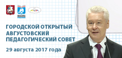
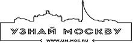

Главная
Проекты
Конкурсы
Методическое пространство
Документы
Сведения об образовательной организации
План работы
Контакты
8(495)912-63-37
gmc@edu.mos.ru
ОПЕРАТИВНАЯ ИНФОРМАЦИЯ
АНОНСЫ
НОВОСТИ
СМИ О НАС
1
2
3
4
5
6
7
8
9
Prev
Next
22.10.2018
Городское информационно-практическое собрание по проблемам детского и …
22.10.2018
Деловая библиотека приглашает принять участие в городском конкурсе «Юн…
22.10.2018
Семинар «Патриотическое воспитание в образовательных организациях: фор…
22.10.2018
Семинар «Методика подготовки и проведение фестиваля "Эстафета иск…
22.10.2018
Приглашаем к участию в Большом этнографическом диктанте
22.10.2018
Серия вебинаров совместно с Центром развития профессионального образов…
19.10.2018
Итоги городских семинаров для преподавателей-организаторов (учителей) …
19.10.2018
Семинар по подготовке участников фестиваля «Эстафета искусств – 2019» …
19.10.2018
Конкурс «Мой первый бизнес»
19.10.2018
Продолжение осенних экскурсий: четвертая неделя проекта «Московский эк…
19.10.2018
СВАО. Пост-релиз семинара «Подготовка ребёнка к конкурсам – важнейший …
19.10.2018
Семинар «Роль классного руководителя в экологическом воспитании обучаю…
19.10.2018
Вебинар «Новые технологии в работе школьных библиотек. Создание буктре…
19.10.2018
Акция «Первоклассный читатель»
19.10.2018
Start-up вебинар «Практический курс «Персональный бренд-менеджер»
19.10.2018
Учителям технологии: приглашаем посетить высокотехнологичное предприят…
19.10.2018
Проект «Учебный день в Технограде»
19.10.2018
Конкурс «Мой первый бизнес»
18.10.2018
Итоги профилактических недель «Высокая ответственность» и «Будущее в м…
18.10.2018
Рабочая группа жюри вокального жанра Фестиваля «Эстафета искусств – 20…
18.10.2018
Московский детский чемпионат KidSkills. Дистанционный этап: экспертная…
18.10.2018
Третья неделя экскурсий для педагогов столичных школ
18.10.2018
Карьерное консультирование: принципы, инструменты, возможности
18.10.2018
Следите за обновлением программ на Московской образовательной платформ…
18.10.2018
Акция – online-выставка творческих работ «Этот разнообразный мир!» к М…
18.10.2018
Семинар по подготовке участников фестиваля «Эстафета искусств – 2019» …
18.10.2018
Разработан комплекс образовательных материалов «Урок Памяти» в преддве…
18.10.2018
Семинар в СЗАО «Дополнительная общеобразовательная общеразвивающая про…
18.10.2018
Конкурс «Знатоки военной истории России»
18.10.2018
Мастер-класс для педагогов «Ансамблевое чтение»
18.10.2018
Рабочая группа жюри в жанре «Художественное чтение» фестиваля «Эстафет…
18.10.2018
Экономикус: формирование предпринимательского мышления
18.10.2018
Правоохранительная деятельность: кем можно работать?
18.10.2018
7 шагов к работе мечты
18.10.2018
Видеорезюме – виртуальная презентация для работодателя
18.10.2018
Старт карьеры: выбор направления
18.10.2018
Тренинг «Профессиональное самоопределение»
18.10.2018
Выбор стратегии карьерного роста
18.10.2018
Молодые специалисты на рынке труда России
18.10.2018
Конкурентоспособное резюме – путь к успеху!
18.10.2018
Карьерный клуб: твой путь в мире профессий
18.10.2018
Современное швейное производство от «А» до «Я»
18.10.2018
Производство теплообменной техники и автоматики
18.10.2018
Музей магистрального транспорта газа: виртуальное путешествие
18.10.2018
Профессия 1С: программист будущего
18.10.2018
Профстажировка на предприятии ООО «СКТ-ПРО»
18.10.2018
БПЛА: программирование коптеров
17.10.2018
Презентационная сессия заключительного этапа Конкурса для педагогическ…
17.10.2018
Семинар «Методика подготовки участников и регламент проведения фестива…
17.10.2018
Семинар для педагогических работников ОО «Нормативное обеспечение реал…
17.10.2018
Состоялся семинар «Методика подготовки и проведение фестиваля "Эс…
17.10.2018
Учителям технологии: приглашаем посетить высокотехнологичное предприят…
17.10.2018
Итоги регионального этапа Всероссийского конкурса сочинений – 2018
17.10.2018
Семинар для учителей естествознания ЮАО «Использование ресурсов г. Мос…
17.10.2018
Семинар для учителей естествознания ЮВАО «Использование ресурсов г. Мо…
16.10.2018
Семинар «Патриотическое воспитание в образовательных организациях: фор…
16.10.2018
Учителям технологии: приглашаем посетить высокотехнологичное предприят…
16.10.2018
Учителям информатики: приглашаем учителей САО и ЗелАО на семинар «Форм…
16.10.2018
Учителям информатики: приглашаем посетить высокотехнологичное предприя…
16.10.2018
Учителям информатики: приглашаем учителей ЮВАО на семинар «Формировани…
15.10.2018
Круглый стол для методистов и старших воспитателей «Дошкольник в Техно…
15.10.2018
Образовательная экскурсия по Технопарку
12.10.2018
Состоялся семинар «Методика подготовки и проведение фестиваля «Эстафет…
12.10.2018
Состоялся семинар для педагогов образовательных организаций по подгото…
12.10.2018
ЗАО. Совещание по организации городских фестивалей «Эстафета искусств …
12.10.2018
Мастер-класс для педагогов дополнительного образования по театральной …
12.10.2018
Профстажировки для школьников столичных школ и студентов московских ко…
12.10.2018
Экскурсии для педагогов столичных школ
12.10.2018
Оттачиваем мастерство целеполагания на клубных встречах «Soft skills 2…
12.10.2018
Профессиональное обучение. Мастер-классы от московских колледжей 13 ок…
12.10.2018
Следите за обновлением программ на Московской образовательной платформ…
12.10.2018
Церемония награждения участников конкурса фотографий «Москва в жизни и…
11.10.2018
Хотите открыть промышленную Москву?
11.10.2018
Итоги семинара Городского фестиваля «Эстафета искусств – 2019», жанр …
11.10.2018
Семинар-практикум «Тэг-регби на уроках физической культуры» для специа…
11.10.2018
Технический прогресс: эволюция средств телекоммуникации
11.10.2018
История почтового дела в России: от ямщицкой тройки до e-mail
11.10.2018
Вертикальный транспорт
11.10.2018
Итоги городских семинаров по физической культуре «Особенности организа…
11.10.2018
Семинар «Методика подготовки и проведение фестиваля "Эстафета иск…
11.10.2018
Учителям физики: семинар-практикум «Использование нового учебного обор…
11.10.2018
Цикл семинаров «Организация системы профилактики негативных проявлений…
10.10.2018
Серия семинаров «Реализация концепций школьного образования по различн…
10.10.2018
Серия семинаров «Реализация концепций школьного образования по различн…
10.10.2018
Серия семинаров «Реализация концепций школьного образования по различн…
10.10.2018
Клуб молодых учителей английского языка «Предметно-языковое интегриров…
10.10.2018
Серия семинаров «Реализация концепций школьного образования по различн…
10.10.2018
Семинар для учителей иностранных языков ЮЗАО «Реализация дифференциров…
10.10.2018
Серия семинаров «Реализация концепций школьного образования по различн…
10.10.2018
Серия семинаров «Реализация концепций школьного образования по различн…
10.10.2018
Серия семинаров «Реализация концепций школьного образования по различн…
10.10.2018
СВАО. Совещание «Особенности работы экспертов на заочном этапе Городс…
10.10.2018
Клуб молодых учителей английского языка «Предметно-языковое интегриров…
10.10.2018
Серия семинаров «Реализация концепции школьного образования предметной…
10.10.2018
Семинар для учителей физической культуры ЗелАО «Обеспечение мер безопа…
10.10.2018
Серия семинаров «Реализация концепций школьного образования по различн…
10.10.2018
Открыт VI Городской экологический фестиваль «Бережём планету вместе»
10.10.2018
Семинар для учителей естествознания CЗАО «Использование ресурсов г. Мо…
10.10.2018
Учителям физики: мастер-класс «Законы сохранения в природе»
10.10.2018
ВАО. Итоги cеминара «Организационно-методическое сопровождение городс…
10.10.2018
Семинар для учителей естествознания ЗАО «Использование ресурсов г. Мос…
10.10.2018
Юбилейный урок «Великая Северная экспедиция»
10.10.2018
Итоги и материалы установочного совещания для педагогов ЦАО, ответстве…
09.10.2018
Семинар «Методика подготовки и проведение фестиваля "Эстафета иск…
09.10.2018
Состоялись семинары для учителей географии города Москвы
09.10.2018
Семинар для воспитателей «Ребёнок дошкольного возраста – субъект деяте…
09.10.2018
Итоги первого дня осеннего уикенда профессий от московских колледжей
08.10.2018
Семинар для учителей музыки ЗАО, ТиНАО «Профессиональные компетенции у…
08.10.2018
Мастер-класс для воспитателей и педагогов дополнительного образования …
08.10.2018
Конкурс сочинений «Роль Московской Городской Думы в жизни столицы»
08.10.2018
Семинар для учителей музыки ЦАО, ЮВАО «Профессиональные компетенции уч…
08.10.2018
Продолжается регистрация на семинар «Патриотическое воспитание в образ…
08.10.2018
Семинар для учителей музыки САО, СЗАО, ЗелАО «Профессиональные компете…
08.10.2018
Семинар для учителей музыки ВАО, СВАО «Профессиональные компетенции уч…
08.10.2018
Открытие выставки работ учителей изобразительного искусства «Пленэр. Э…
08.10.2018
Всероссийский конкурс «Цифровой урок»
08.10.2018
Конкурс сочинений «Роль Московской Городской Думы в жизни столицы»
08.10.2018
Семинар для учителей физической культуры СЗАО «Обеспечение мер безопас…
08.10.2018
Семинар для учителей физической культуры ЗАО «Обеспечение мер безопасн…
08.10.2018
Семинар для учителей физической культуры ТиНАО «Обеспечение мер безопа…
08.10.2018
Семинар для учителей физической культуры ЮЗАО «Обеспечение мер безопас…
08.10.2018
Семинар для учителей физической культуры ЮАО «Обеспечение мер безопасн…
08.10.2018
Семинар для учителей физической культуры ЮВАО «Обеспечение мер безопас…
08.10.2018
Семинар для учителей физической культуры ЦАО «Обеспечение мер безопасн…
08.10.2018
Семинар для учителей физической культуры ВАО «Обеспечение мер безопасн…
08.10.2018
Семинар для учителей физической культуры САО «Обеспечение мер безопасн…
1
2
3
4
5
6
7
8
9
Prev
Next
13.09.2018
Проект «Первая помощь»
05.09.2018
Всероссийские открытые уроки на портале «Проектория»
20.08.2018
Всероссийский конкурс методических разработок педагогов «Цифровой урок…
16.08.2018
Всероссийский конкурс «Лучший учитель Всероссийской акции по безопасно…
14.08.2018
«Москва. Город, где рождается завтра». Первый урок нового учебного год…
06.08.2018
Международная профессиональная олимпиада учителей «ПРОФИ-2018»
12.07.2018
Юбилейная метапредметная олимпиада «Московский учитель»
01.06.2018
Рекомендации Совета Федерации для сайтов о защите детей в сети
06.03.2018
Всероссийский конкурс «Большие вызовы для учителя»
14.02.2018
Московские школьники примут участие в открытом уроке в Театральном муз…
12.02.2018
Программа «Пять шагов толерантности» поможет реализовать молодёжные со…
09.02.2018
Поддержим «Единый урок безопасности в сети»
29.11.2017
«Час кода». Методические материалы для проведения тематического урока
21.11.2017
Научно-практическая конференция «Поддержка и продвижение чтения в обра…
17.11.2017
О проведении тематического урока информатики и акции «Час кода»
13.11.2017
Городская научно-практическая конференция «Энергосбережение – дело каж…
07.11.2017
Конкурсы и мероприятия Национального рейтинга «Страна молодых» на 2017…
02.11.2017
План мероприятий Экспертного совета по информатизации системы образова…
26.10.2017
Городское соревнование «Первая помощь»
25.10.2017
Мастер-классы V Съезда учителей Москвы
15.09.2017
Всероссийская конференция «Актуальные проблемы профилактики асоциально…
11.09.2017
О возможностях «Московской электронной школы» для учителей расскажут н…
08.08.2017
«Медицинский класс в московской школе» представят на Форуме «Москвичам…
24.07.2017
VI Всероссийский онлайн-чемпионат «Изучи Интернет – управляй Им!»
29.05.2017
Московские школы примут участие в акции «Батарейки, сдавайтесь!» (1 ию…
22.05.2017
Школьники Москвы обратятся к участникам VIII Невского международного э…
17.05.2017
Московская неделя профилактики ВИЧ-инфекции. Методические материалы
17.05.2017
III Всероссийская акция по борьбе с ВИЧ-инфекцией, приуроченная к Всем…
17.05.2017
В Парке Горького пройдет четвёртый уличный фестиваль «Политех»
12.04.2017
В Год экологии школьники представят проектные и исследовательские эко-…
11.04.2017
Вторая открытая научно-практическая конференция «Старт в медицину» про…
11.04.2017
Московские школьники выйдут на связь с МКС (17 апреля 2017 года)
05.04.2017
Итоги онлайн-чемпионата по скоростному набору текста среди москвичей п…
04.04.2017
Московские педагоги проведут мастер-классы по работе с современным уче…
04.04.2017
Торжественная церемония награждения победителей конкурса «Московский в…
03.04.2017
Юные техники и изобретатели Москвы представят свои лучшие работы
03.04.2017
Московские школьники примут участие в конференции «Наука для жизни» (1…
03.04.2017
Учащиеся представят проектные и исследовательские работы на конференци…
03.04.2017
Объявлены имена лауреатов конкурса «Педагог года Москвы – 2017»
03.04.2017
Вторая открытая научно-практическая конференция «Старт в медицину» про…
30.03.2017
Имена лауреатов конкурса «Учитель года Москвы – 2017» назовут 1 апреля
29.03.2017
В Год экологии пройдет встреча эко-волонтёров в Москве (30 марта 2017 …
29.03.2017
Педагогам представят новые форматы проведения урока технологии (30 мар…
28.03.2017
Школьники пройдут квест по истории России (29 марта 2017 года)
14.03.2017
Финал городских конкурсов ученических проектов «История моей семьи в и…
13.03.2017
В столице определят лучших знатоков военной истории России среди школь…
10.03.2017
В Москве выберут самых талантливых читателей среди школьников
14.02.2017
Открытый урок «О, Мольер! Великий Мольер!» пройдёт в театральном музее…
02.02.2017
Формирование междисциплинарной образовательной среды обсудят на кругло…
01.02.2017
Круглый стол «Конвергентное образование для будущего»
25.01.2017
Итоги первого тура онлайн-чемпионата по скоростному набору текста сред…
17.01.2017
Более 500 московских школьников примут участие в Учебном дне на ВДНХ (…
16.01.2017
В геологическом музее имени Вернадского состоится торжественное открыт…
01.12.2016
Московские школьники примут участие в конкурсе чтецов (3 декабря 2016 …
14.11.2016
В Москве впервые пройдет Кадетский день на ВДНХ (16 ноября 2016 года)
11.11.2016
О навыках и умениях для реальной жизни расскажут на селекторном семина…
09.11.2016
Церемония закрытия чемпионата профессионального мастерства «Московские…
03.11.2016
Выставка творческих работ учителей изобразительного искусства пройдет …
26.10.2016
С 4 по 22 ноября 2016 года в ЦВЗ «Манеж» пройдёт мультимедийная выстав…
19.10.2016
Городской Слёт потомков воинов дивизий народного ополчения пройдёт в м…
17.10.2016
Городской Слёт потомков воинов дивизий народного ополчения пройдёт в м…
10.10.2016
О навыках, необходимых для жизни и будущей профессии, расскажут на сел…
07.09.2016
В Департаменте образования состоится пресс-конференция «Общегородская …
07.09.2016
О самостоятельности школы в разработке основных образовательных програ…
01.09.2016
IV Съезд учителей Москвы
31.08.2016
Для московских школьников проведут экологический урок (1 сентября 2016…
24.08.2016
Московских школьников наградят за лучшие работы на конкурсе «Узнай Мос…
12.08.2016
В столице стартует Олимпиада для учителей
12.08.2016
На пресс-конференции Департамента образования расскажут о подготовке к…
21.07.2016
Лучшие педагоги Москвы проведут авторские мастер-классы на Съезде учит…
29.06.2016
Конкурс проектов для школьников и родителей «Бюджет для граждан» старт…
17.06.2016
Московские ученики соревнуются в создании лучших видеороликов о школе
26.05.2016
Единый урок «Семья и Отечество в моей жизни»
23.05.2016
В Москве стартовал городской проект «Юные мастера»
20.05.2016
В Ночь музеев московские педагоги-художники проведут мастер-классы (21…
20.05.2016
Победителей городского конкурса «Юные экологи Москвы» наградят в Моско…
19.05.2016
Сеть кинотеатров «Каро» запускает спецпроект для школьников «КИНО.Клас…
16.05.2016
Московских студентов познакомят с работой предприятий города (16, 18 м…
29.04.2016
Проверить свои знания истории Отечества московские школьники смогут во…
29.04.2016
Авторов лучших сочинений-рассуждений о боевом пути ветерана наградят н…
27.04.2016
Московские школьники представят свои проекты на городском фестивале на…
19.04.2016
Победителей и призёров конкурса «Магия театра: путешествия во времени»…
19.04.2016
Учителя года Москвы – 2016 объявят на селекторном совещании Департамен…
19.04.2016
Научно-практическая конференция «Инженеры будущего» пройдет в Москве 2…
15.04.2016
«Изучи Интернет – управляй им»: регистрация участников Всероссийского …
14.04.2016
Городская конференция «Старт в медицину» проходит в Москве 14–15 апрел…
13.04.2016
Московский форум молодых педагогов пройдет в апреле
13.04.2016
Мастер-классы для учителей технологии пройдут в Москве (14 апреля, 14:…
12.04.2016
Торжественная церемония награждения победителей и призёров конкурса де…
08.04.2016
В Москве пройдёт городская конференция «Старт в медицину» (14–15 апрел…
06.04.2016
На пресс-конференции Департамента образования Москвы расскажут о совме…
01.04.2016
Московские школьники выйдут на связь с Международной космической станц…
30.03.2016
В Москве пройдёт городская конференция «Курчатовский проект – от знани…
28.03.2016
Конкурс детских рисунков «Жди меня, и я вернусь…»
22.03.2016
Студентов колледжей познакомят с работой моторвагонного депо «Москва-2…
22.03.2016
Более 60 студентов колледжей станут участниками мероприятий проекта «П…
22.03.2016
Единый день профориентации в Москве поможет определиться учащимся с бу…
16.03.2016
Школьники пройдут образовательный квест, где проверят свои навыки оказ…
16.03.2016
Московские школьники пройдут квест по крупнейшему в мире театру кукол …
10.03.2016
Московские школьники расскажут о судьбах родственников, совершивших бо…
10.03.2016
Московские педагоги прочтут свои стихи и представят прозу на литератур…
15.02.2016
Открытый урок в музее в честь 135-летия балерины Анны Павловой впервые…
11.02.2016
Более полутора тысяч школьников столицы примут участие в городском эта…
08.02.2016
Актуальные вопросы развития дошкольного образования в Москве обсудят н…
01.02.2016
Итоги конкурса «Литературная перемена» подведут на «Часе завуча» 2 фев…
25.01.2016
Опыт организации профильного образования в проекте «Медицинский класс …
19.01.2016
Новые возможности электронного журнала представят на селекторном совещ…
21.12.2015
Селекторное совещание «Час завуча» пройдет 22 декабря 2015 года (онлай…
1
2
3
4
5
6
7
8
Prev
Next
10.10.2018
О проведении юбилейного пятого Единого урока по безопасности в сети «И…
05.10.2018
C Днём учителя!
02.10.2018
Экскурсии на предприятия для педагогов: новый вектор развития проекта …
05.09.2018
Список значимых мероприятий Департамента Образования города Москвы на …
01.08.2018
Проголосовать на выборах Мэра Москвы можно будет на любом избирательно…
03.07.2018
Университетская среда для учителей
13.06.2018
Пройдут открытые тренировки по техническим видам спорта и робототехник…
05.06.2018
Технопарк ИЦ «Сколково» открывает свои двери учителям года Москвы
04.04.2018
Всероссийский конкурс портфолио сайтов
15.11.2017
Руководитель Департамента градостроительной политики города Москвы про…
09.11.2017
Столичные власти выделят гранты за вклад в развитие проекта «Московска…
31.10.2017
Бесплатные показы экранизаций классических произведений в рамках класс…
10.10.2017
В октябре в российских школах стартует Единый урок безопасности в Инте…
05.10.2017
Сергей Собянин поздравил учителей и ветеранов педагогического труда Мо…
01.09.2017
Поздравляем с началом нового учебного года!
31.08.2017
Сергей Собянин: О главной задаче проекта «Московская электронная школа…
26.07.2017
Общественное обсуждение ФГОС в новой редакции
12.07.2017
Глава Рособрнадзора Сергей Кравцов о том, какие экзамены ждут учителей…
07.07.2017
Открытый конкурс планов уроков «Наука будущего»
07.06.2017
Новый выпуск журнала «Московское наследие»
12.05.2017
Повышение квалификации учителей на базе университетов
20.04.2017
18 апреля 2017 года прошла городская открытая научно-практическая конф…
20.04.2017
Московские школьники вышли на связь с МКС
08.04.2017
Субботник 08.04.2017
27.02.2017
Межрайонный этап Городского конкурса «Самый талантливый читатель»
22.02.2017
Экспертный совет Временной комиссии Совета Федерации
31.01.2017
Московские учителя, разработавшие электронные сценарии уроков, получа…
18.11.2016
В Москве 50 школ планируют оснастить нанотехнологическими комплексами …
17.11.2016
Более 2,5 тысяч учащихся приняли участие в первом Кадетском дне на ВДН…
15.11.2016
Торжественный марш на Красной площади в честь 75-й годовщины Парада 7 …
11.11.2016
В Москве завершился чемпионат профессионального мастерства «Московские…
02.11.2016
Городской обучающий семинар для экспертов и кандидатов в эксперты в сф…
01.11.2016
Школьники посоревнуются в скоростном наборе текста
31.10.2016
Молодых учителей приглашают принять участие в конкурсе «Молодой педаго…
03.10.2016
Видеозаписи мастер-классов IV Съезда учителей Москвы
01.09.2016
Открыта регистрация на IV Съезд учителей Москвы
12.08.2016
Собянин: Курчатовский институт станет самым крупным технопарком Москвы
11.08.2016
В столице стартует Олимпиада для учителей
01.08.2016
На Всероссийском конкурсе «Учитель года России» Москву представит учит…
11.07.2016
В Москве созданы учебно-производственные объединения колледжей
02.06.2016
Более 2,5 млн рублей собрали директора московских школ на благотворите…
26.05.2016
Студенты московских колледжей принимают участие в финале Национального…
18.05.2016
Собянин отметил высокий профессионализм педагогов московских школ
12.05.2016
Книжный фестиваль «Красная площадь»
28.03.2016
Литературно-театральный квест «Некто Гоголь»
25.03.2016
Новый образовательный проект «Вахта милосердия»
16.03.2016
На IT семинаре представили улучшенную версию электронного журнала
11.02.2016
Возможности электронной образовательной среды для педагога представили…
25.01.2016
На пресс-конференции Департамента образования подвели итоги Года литер…
14.01.2016
Возможности улучшенной версии электронного журнала и дневника презенто…
13.01.2016
В Москве стартовал конкурс для педагогов на лучшее объяснение сложных …
30.12.2015
Интернет-пользователи проверили свою грамотность в режиме онлайн с пом…
29.12.2015
В столице наградили победителей и призёров метапредметной олимпиады дл…
13.11.2015
На пресс-конференции Департамента образования рассказали о новых конку…
12.11.2015
Московские школьники вышли на связь с Международной космической станци…
15.10.2015
Россия вошла в число более чем 100 государств, в которых одновременно …
14.10.2015
Открытый лекторий Государственного центрального музея современной исто…
17.09.2015
Cтарт Олимпиад школьников в 2015–2016 учебном году
17.09.2015
Проект «Дороги Победы»
15.09.2015
В образовательных организациях города прошли открытые уроки, посвящённ…
15.09.2015
Более 5700 работ представили школьники столицы на городском конкурсе «…
27.08.2015
Регистрация на III Съезд учителей началась
26.05.2015
Итоги городского фестиваля «НТТМ-2015»
13.05.2015
В реестр примерный основных образовательных программ внесены примерные…
08.05.2015
Торжественная церемония награждения победителей метапредметной олимпиа…
10.04.2015
Видеозаписи мастер-классов финалистов конкурса «Педагог года Москвы – …
29.01.2015
Торжественная церемония открытия Года литературы в России
10.10.2014
Дни профессионального образования. Эксклюзивный репортаж!
03.10.2014
Поздравление с Днём учителя от профсоюзного комитета ГБОУ ГМЦ
09.09.2014
Фото- и видеоотчёт со II съезда учителей
02.09.2014
Общественные консультации по проекту примерной основной образовательно…
10.07.2014
В Царицыно прошёл фестиваль русских сказок «На златом крыльце сидели…
24.06.2014
О проведении тематических уроков
31.01.2014
Занятия по экспериментальной физике в МФТИ
17.01.2014
Завершился прием заявок на участие в Общероссийском рейтинге школьных …
12.12.2013
Итоги конкурса «Школа новых технологий»
03.12.2013
Московские школьники напишут сочинение на основе интервью с ветераном
30.10.2013
В 2014 году конкурс «Педагог года Москвы» пройдет под девизом «Москва …
29.10.2013
График консультаций педагогических работников методистами ГМЦ
22.10.2013
Награждение школ Москвы, наиболее успешных в математическом образовани…
22.10.2013
Педагог года Москвы
21.10.2013
Видеозаписи Съезда учителей Москвы
16.10.2013
Съезд учителей Москвы пройдет 18 октября
14.10.2013
Всероссийский конкурс школьных проектов, посвященных 20-летию Конститу…
10.10.2013
Регистрация участников просветительского проекта «Профессиональная сре…
09.10.2013
Электронная регистрация на мероприятия Департамента образования
09.10.2013
Авиация и космонавтика – вчера, сегодня, завтра
08.10.2013
Пресс-конференция «Съезд учителей Москвы»
1
2
3
4
5
6
7
8
9
Prev
Next
26.09.2018
Тропарево-Никулино: Учащиеся ГБОУ «Школа № 1329» посетили штаб-квартиру Русского географического общества
26.09.2018
Управа района Котловка: Образовательный комплекс «Юго-Запад» принял участие в городском семинаре издательства «Просвещен…
21.09.2018
Твоя газета: Проект студентов «Юго-Запада» признан лучшим на всероссийском конкурсе «Моя семейная реликвия»
18.09.2018
Единая Россия: Партпроект «Здоровое будущее» запустит новую акцию «Здоровое питание – активное долголетие»
18.09.2018
Телеканал 360: Московская область стала лидером экологической акции «Сделаем вместе»
18.09.2018
Восточное Измайлово: Ансамбль «Русский сувенир» успешно выступил на городском конкурсе
18.09.2018
БМ24: Уровень квалификации – современный учитель
12.09.2018
Поселение Десеновское в г. Москве: Ученики Школы № 1392 имени Д.В. Рябинкина получили диплом за участие в конкурсе «Духо…
10.09.2018
Префектура ВАО: Школьники из Новокосина вспомнили героев Отечественной войны 1812 года
07.09.2018
Москва 24: Город в твоих руках
07.09.2018
Российское образование: В Москве стартовала олимпиада «Музеи. Парки. Усадьбы»
05.09.2018
Общероссийский народный фронт: Активисты Народного фронта провели акцию «Урок России» в московских школах
04.09.2018
Газета.ru: Глава Департамента природопользования Москвы Антон Кульбачевский провёл экоурок в московской школе
04.09.2018
Официальный сайт Мэра Москвы: Антон Кульбачевский проведёт экологический урок
04.09.2018
Правда. ру: Какой учебник позволит сдать ЕГЭ по истории на 100 баллов?
04.09.2018
Управа района Щукино: Учитель из Щукина стала финалистом олимпиады «Москва сегодня и завтра»
29.08.2018
Вечерняя Москва: Новый электропоезд «Город образования» запустили в столичном метро
29.08.2018
Ярославский регион: Накануне нового учебного года Дмитрий Миронов встретился с педагогическими работниками
29.08.2018
MK.RU: Прививка от вандализма
17.08.2018
Вести образования: 1 августа Андрей Зинин назначен директором «Городского методического центра» Москвы
17.08.2018
Аргументы и факты: Каких успехов добились российские школьники на международных олимпиадах?
17.08.2018
Префектура Восточного административного округа: Музей «Русский самовар» появился в детском саду в Гольянове
02.07.2018
Преображенка для вас: Ребята из летней инженерной школы при лицее №1502 снялись в телепрограмме ТемоЦентр
02.07.2018
Эксперт бизнеса: Ежемесячно участвующие в развитии «МЭШ» учителя Москвы получают городскую надбавку
02.07.2018
Национальные интересы: Московским учителям дают ежемесячную городскую надбавку за развитие «МЭШ»
25.06.2018
Префектура ВАО: Музей школы № 2128 высоко оценили на городском уровне
25.06.2018
Новокосино. Вестник района: Музей новокосинской школы №2128 получил высокую оценку Городского методического центра
25.06.2018
Официальный сайт Мэра Москвы: В столице прошло заседание Межведомственного координационного совета по развитию межнацион…
25.05.2018
Российское образование: Более 10 тысяч человек участвовали в финале олимпиады «Музеи. Парки. Усадьбы»
25.05.2018
Управа района Матушкино: Очный этап конкурса ораторского искусства на иностранном языке «Я умею говорить красиво»
25.05.2018
Обозрение: «Необычное в обычном»: педагоги школы № 933 стали призёрами городского конкурса
25.05.2018
Обозрение: Школа № 1242 приняла участие в закрытии городского фестиваля «Мир иностранных языков»
10.05.2018
Управа района Гольяново: Гольяновская ученица вошла в число победителей метапредметной олимпиады
08.05.2018
Измайлово: Школьный музей в Измайлове стал активным участником многих городских проектов
07.05.2018
Городской округ Щербинка: Ученик из Щербинки стал победителем конкурса «Юные техники и изобретатели»
28.04.2018
Префектура ЮВАО: Малыши Рязанского района стали лучшими в конкурсе детского творчества «Карусель»
26.04.2018
Управа района Матушкино: Студентка Политехнического колледжа № 50 приняла участие в конкурсе ораторского искусства на ин…
19.04.2018
Справедливая Россия: Сергей Миронов: профессия геолога будет востребована всегда
18.04.2018
Управа района Кузьминки: Школьники из Кузьминок приняли участие в проекте «Московский экскурсовод»
18.04.2018
Внуково: Педагог школы им. Тарана провёл мастер-класс по безопасности в Городском методическом центре Департамента образ…
17.04.2018
Управа района Выхино-Жулебино: Школьники из Выхина-Жулебина посетили тренинг «Генерация идей. Брейнсторминг»
17.04.2018
Префектура САО: Дети из САО приняли участие в Московском межрегиональном фестивале «Маленький Леонардо – 2018»
05.04.2018
РИАМО: Более 200 учителей получили гранты за участие в проекте «Московская электронная школа»
05.04.2018
Управа района Капотня: Учителя «Школы в Капотне» стали участниками семинара «МЭШ: новые возможности для каждого»
05.04.2018
Информационный Центр Правительства Москвы: В рамках акции «Школа утилизации: электроника» учащимся предоставляется возмо…
04.04.2018
Префектура ЮАО: Семинар для участников программы «Учебный день в музее» прошел в «Царицыне»
03.04.2018
РЭШ как точка роста
03.04.2018
Тропарево-Никулино: Церемония закрытия Фестиваля «Созвездие талантов» состоится 11 апреля
28.03.2018
Ясенево: Ученица гимназии имени Н. М. Карамзина стала призёром городского конкурса читающих детей
28.03.2018
Администрация поселения Вороновское: Обучающиеся ГБОУ Школа № 2073 приняли участие в городском конкурсе «Мой робот»
26.03.2018
Тропарёво-Никулино: Ученики ГБОУ Школа «Тропарёво» стали лауреатами фестиваля «Созвездие талантов»
26.03.2018
Управа района Северное Измайлово: В КАИТ № 20 отметили День православной книги
22.03.2018
Mos.News: Молодые педагоги из Зеленограда стали призёрами конкурса «Молодые педагоги – московскому образованию»
22.03.2018
Molnet: Аттестация педагогов должна быть автоматизирована
22.03.2018
Мой район Новогиреево: В новогиреевской школе № 2093 стартовал межшкольный проект «Открытая среда»
22.03.2018
Дагестанская правда: Таланты надо развивать
22.03.2018
Косино-Ухтомский Вестник: Учитель истории из Косино-Ухтомского стала лауреатом городского фестиваля
22.03.2018
Тропарёво-Никулино: Победители «Созвездия талантов» дадут благотворительные концерты
21.03.2018
Аргументы и Факты: Школа с МЭШками знаний. Как IT-технологии меняют столичное образование
20.03.2018
Сайт города Балаково: А у меня портфель в руке без толстых книжек – налегке!
20.03.2018
Администрация поселения Вороновское: Подведены итоги городского этапа конкурса проектно-исследовательских работ «Магия т…
19.03.2018
Префектура Южного Административного округа: Концерт проекта «Вокальное искусство» состоялся в ЮАО
19.03.2018
Наш район Котловка: Ученики образовательной площадки Котловка вышли в финал конкурса «Мастерская сказки»
19.03.2018
Московский Комсомолец: Представители японских университетов дают высокую оценку мастерству московских учителей
14.03.2018
Официальный сайт Мэра Москвы: В Москве подведут итоги чемпионата по скоростному набору текста
14.03.2018
АГН «Москва»: Более 200 школ Москвы планируют оснастить с 1 сентября современной техникой для изучения астрономии
14.03.2018
Вечерняя Москва: Школьный планетарий смогут посещать и жители района
14.03.2018
Наш район Котловка: «Мир вокруг» открывает новые возможности
13.03.2018
Администрация поселения Киевский: Ученики школы №1391 из поселения Киевский примут участие в финале литературного конкур…
13.03.2018
Официальный сайт Мэра Москвы: Почти 370 школьников примут участие в финале кадетской олимпиады
13.03.2018
Информационный Центр Правительства Москвы: В столице пройдёт заключительный очный этап Московской кадетской олимпиады
13.03.2018
Информационный центр Правительства Москвы: В столице пройдёт заключительный очный этап Московской кадетской олимпиады
12.03.2018
Money-Talks: По распоряжению Исаака Калины московские школы получат методички на основе послания Путина
12.03.2018
Управа района Измайлово: Измайловские школьники стали «Знатоками военной истории»
02.03.2018
Strana: «Земля – наш общий дом»: выставка в Мосгордуме
02.03.2018
Южное Чертаново: «Скрайбинг – технология будущего»: тренинг по развитию визуального мышления пройдёт в техникуме Красина
01.03.2018
Обозрение: В местной школе № 1242 прошёл второй этап конкурса «Педагог года»
28.02.2018
Управа района Преображенское: Школьники представили свои проекты
27.02.2018
Проспект Вернадского: Ученики школы № 324 сыграли персонажей «Ревизора»
22.02.2018
Наш район Котловка: В Юридическом колледже отстояли «Право на труд»
21.02.2018
Новая губерния: Исаак Калина: «Какой будет "Московская электронная школа" завтра — зависит от московских учите…
15.02.2018
Информационный Центр Правительства Москвы: В ГБОУ № 2030 рассказали о принципах работы «Московской электронной школы»
14.02.2018
Управа района Покровское-Стрешнево: Школьники из Покровского-Стрешнева станцевали на Сретенском балу
12.02.2018
Вечерняя Москва: Музейные уроки помогают лучше усвоить материал
08.02.2018
Управа района Северное Измайлово: В Северном Измайлово состоялся первый этап конкурса «Фейерверк созвучий»
06.02.2018
Твоя газета: Гимназисты приняли участие в конкурсе проектов, посвящённых 75-летию Сталинградской битвы
05.02.2018
Наш район Котловка: Образовательный комплекс «Юго-Запад» принимает участие в исторической олимпиаде
01.02.2018
Глас Народа: Школы начнут проводить учебные дни в музеях
31.01.2018
Управа района Сокол: Профориентационный урок в школе на Соколе посвятили аэрокосмической инженерии
29.01.2018
Красный север: Считаете себя знатоком Арктики?
25.01.2018
Замоскворечье: Ребята из школы № 627 поучаствовали в фестивале «Образование. Наука. Производство – 2018»
23.01.2018
Большая Москва: Общегородское онлайн-совещание для родителей состоится 24 января
23.01.2018
Вечерняя Москва: Библиотеки воплощают экологические проекты
22.01.2018
Управа района Восточный: Школьники района станут участниками олимпиады по истории и культуре столичных храмов
18.01.2018
Косино-Ухтомский Вестник: Успешные люди школы № 2036
16.01.2018
Разумовский Вестник: Самого талантливого читателя выберут в библиотеке на Михалковской
09.01.2018
Богородские ведомости: Предновогодний успех студентов из КАИТ-20
26.12.2017
SmolGrad.ru: Педагоги из Москвы посетили школу №33 в Смоленске
25.12.2017
Вечерняя Москва: Мы рады педагогам помогать
25.12.2017
Управа района Гольяново: Гольяновцы победили в метапредметной олимпиаде «Музеи. Парки. Усадьбы»
22.12.2017
Поселение Михайлово-Ярцевское: Школьники Михайлово-Ярцевского смогут поучаствовать в конкурсе детского рисунка
22.12.2017
Аргументы и факты: Состязания педагогов. Кто победит в олимпиаде «Московский учитель»?
13.12.2017
Вечерняя Москва: Оценки сохранят, а электронную школу усовершенствуют
12.12.2017
Наш район Восточный: Команда КВН школы № 664 вышла в полуфинал игр «Вернисаж профессий»
12.12.2017
Вечерняя Москва: Клуб учителей отметил двухлетие
05.12.2017
Префектура ЮАО: Окружной этап детского конкурса рисунков прошёл в районе Орехово-Борисово Северное
20.11.2017
Информационный Центр Правительства Москвы: В декабре в Москве стартует V Метапредметная олимпиада «Не прервётся связь по…
14.11.2017
Новости Югры: Всероссийская конференция по дополнительному образованию в Нефтеюганске собрала около 300 специалистов
МЕТОДИЧЕСКОЕ ПРОСТРАНСТВО
НАЧАЛЬНАЯ
ШКОЛА
МОЛОДЫМ
СПЕЦИАЛИСТАМ
ДОШКОЛЬНОЕ
ОБРАЗОВАНИЕ
ВОСПИТАТЕЛЬНАЯ
РАБОТА
ПРОФОРИЕНТАЦИЯ
ИНФОРМАЦИОННО-
БИБЛИОТЕЧНОЕ
ОБЕСПЕЧЕНИЕ
КЛАССНЫЙ
ЧАС
ДОПОЛНИТЕЛЬНОЕ
ОБРАЗОВАНИЕ
РОБОТОТЕХНИКА
ПРОФИЛАКТИКА
НЕГАТИВНЫХ
ПРОЯВЛЕНИЙ
СРЕДНЕЕ
ПРОФЕССИОНАЛЬНОЕ
ОБРАЗОВАНИЕ
ПРОФИЛАКТИКА
ДЕТСКОГО
ТРАВМАТИЗМА
ШАХМАТЫ
УЧЕБНО-МЕТОДИЧЕСКОЕ ОБЕСПЕЧЕНИЕ
ШКОЛА ДЛЯ ВСЕХ
ДОПОЛНИТЕЛЬНОЕ ПРОФЕССИОНАЛЬНОЕ ОБРАЗОВАНИЕ

